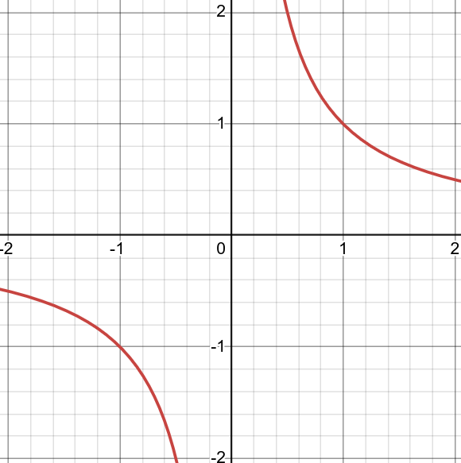
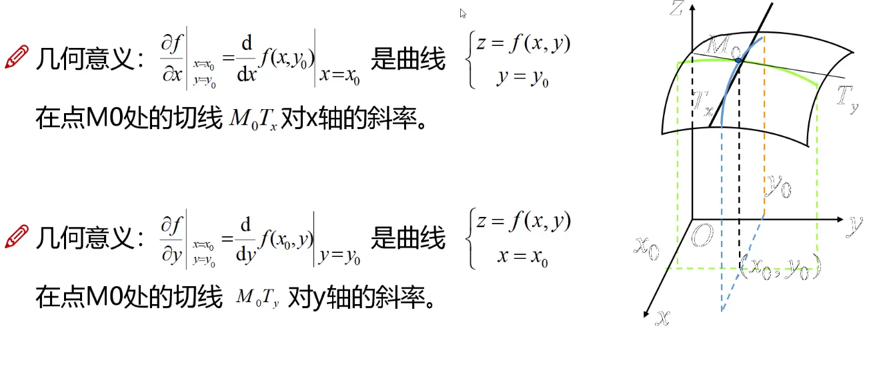

These notes are written by a human, with errata from ds.
No guarantee the author will still understand them later (lol).
This is the first of 12 notes in the mathematics-for-machine-learning series. It will keep being updated; the main purpose is revision — so that my memory does not get so good that I forget.
0 Functions
Extremely basic — high-school, even middle-school material. Included only to keep the series complete.
0.1 Definition of a function
The relation between one quantity and another, e.g. $A=\pi r^2$.
Common forms: $y=f(x)$, $y=\phi(x)$, etc.
The value the function takes at $x_0$: $y_0=y|_{x=x_0}=f(x_0)$.
0.2 Several kinds of function
0.2.1 Piecewise functions
$$ f(x) = \begin{cases} \sqrt{x}, & x \ge 0 \\[4pt] -x, & x < 0 \end{cases} $$
Within different parts of the domain the correspondence is different, so the function is split into several pieces — hence “piecewise”.
0.2.2 Inverse functions
$$h(t)=\frac{1}{2}gt^2 \quad\Rightarrow\quad t(h)=\sqrt{\frac{2h}{g}}$$
A function obtained by swapping the independent and dependent variables is called the inverse function.
0.2.3 Explicit and implicit functions
Explicit function: the correspondence can be seen directly, e.g. $y=x^2+1$.
Implicit function: the correspondence cannot be seen directly, e.g. $F(x,y)=0$, $3x+y-4=0$.
0.3 Properties of functions
0.3.1 Parity
Even function:
satisfies $f(-x)=f(x)$;
symmetric about the $y$-axis.
Example: $$f(x)=x^2 \Rightarrow f(-x)=(-x)^2=x^2=f(x)$$
Odd function:
satisfies $f(-x)=-f(x)$;
symmetric about the origin.
Example:
$$f(x)=x^3 \Rightarrow f(-x)=(-x)^3=-x^3=-f(x)$$
0.3.2 Periodicity
$$f(x+T) = f(x)$$
Reading: the function repeats its behaviour over a fixed period $T$; we say it is periodic.
0.3.3 Monotonicity
Strictly increasing: take an increasing function $f(x)$; if $x_1>x_2$ then $f(x_1) > f(x_2)$.
Non-decreasing: take a non-decreasing function $g(x)$; if $x_1 > x_2$ then $g(x_1) \ge g(x_2)$.
Strictly decreasing: take a decreasing function $h(x)$; if $x_1>x_2$ then $h(x_1) < h(x_2)$.
Non-increasing: take a non-increasing function $l(x)$; if $x_1>x_2$ then $l(x_1) \le l(x_2)$.
1 Limits
1.1 Sequences
1.1.1 Definition
A list of numbers arranged in order: $u_1,u_2,…,u_n,…$, where $u_n$ is called the general term.
1.1.2 Properties
For a sequence $\{u_n\}$: if, as $n$ grows without bound, the general term approaches a constant $A$, the sequence is said to have the limit $A$, or to converge to $A$; otherwise it is said to diverge.
$$\begin{gathered} \lim_{n \to \infty} u_n = A\\ \text{or } u_n \to A \ (n \to \infty) \end{gathered}$$
Other examples:
$$\begin{gathered} \lim_{n \to \infty} \frac{1}{3^n} = 0\\ \lim_{n \to \infty} \frac{n}{n+1} = 1\\ \lim_{n \to \infty} 2^n \ \text{does not exist (diverges)} \end{gathered}$$
1.2 Limits
1.2.1 Notation
$x \to \infty$ means “as $|x|$ grows without bound”.
$x \to +\infty$ means “as $x$ grows without bound”.
$x \to -\infty$ means “as $x$ decreases without bound”.
$x \to x_0$ means “as $x$ approaches $x_0$ from both sides”.
$x \to x_0^+$ means “as $x$ approaches $x_0$ from the right”.
$x \to x_0^-$ means “as $x$ approaches $x_0$ from the left”.
1.2.2 Graphs and examples
$$\lim_{x \to +\infty} e^{-x}=0$$

$$\lim_{x \to \infty} \frac{1}{x} = 0$$

$$\lim_{x \to -\infty} \arctan x=-\frac{\pi}{2}$$

1.2.3 Related definitions
The function is defined in a neighbourhood of $x_0$, and $\lim_{x \to x_0}f(x)=A$, or $f(x) \to A \ (x \to x_0)$.
$$\lim_{x \to 1}\frac{x^2-1}{x-1}=\lim_{x \to 1} \frac{(x-1)(x+1)}{x-1}=2$$
1.2.4 One-sided limits
Right half-neighbourhood $(x_0,\ x_0+\delta)$; left half-neighbourhood $(x_0-\delta,\ x_0)$. Only when the function is defined on one of these neighbourhoods can we speak of the limit from that side.
$$\begin{gathered} \lim_{x \to x_0^+} f(x) = A \quad\text{or}\quad f(x) \to A \ (x \to x_0^+) \quad\text{or}\quad f(x_0+0)=A\\ \lim_{x \to x_0^-} f(x) = A \quad\text{or}\quad f(x) \to A \ (x \to x_0^-) \quad\text{or}\quad f(x_0-0)=A \end{gathered}$$
1.2.5 Properties
$$\lim_{x \to x_0} f(x)=A \quad\text{iff}\quad \lim_{x \to x_0^-}f(x)=\lim_{x \to x_0^+} f(x)=A$$
Counter-example:
$$f(x)=\begin{cases} x-1 &x<0, \\ 0 &x=0, \\ x+1 &x>0 \end{cases}$$
The limit of $f(x)$ as $x \to 0$:
Solution:
$$\lim_{x \to 0^+} f(x) = \lim_{x \to 0^+}(x+1)=1$$
$$\lim_{x \to 0^-} f(x) = \lim_{x \to 0^-}(x-1)=-1$$
The left and right limits exist but are not equal, therefore $\lim_{x \to 0}f(x)$ does not exist.
2 Infinitesimals and infinities
2.1 Infinitesimals
2.1.1 Definition
Having zero as its limit.
$\lim_{x \to \infty} \frac{1}{x}=0$, so $\frac{1}{x}$ is an infinitesimal as $x \to \infty$.
$\lim_{x \to 2}(3x-6)=0$, so $3x-6$ is an infinitesimal as $x \to 2$.
2.1.2 Properties
- The algebraic sum of finitely many infinitesimals is still an infinitesimal.
- The product of finitely many infinitesimals is still an infinitesimal.
- The product of a bounded variable and an infinitesimal is still an infinitesimal.
- The sum of infinitely many infinitesimals is not necessarily an infinitesimal. Example:
$$\begin{gathered} \lim_{n \to \infty} (\frac{1}{n^2}+\frac{2}{n^2}+…+\frac{n}{n^2})\\ =\lim_{n \to \infty} \frac{\frac{n(n+1)}{2}}{n^2}\\ =\lim_{n \to \infty} \frac{n+1}{2n}\\ =\frac{1}{2} \end{gathered}$$
- The quotient of two infinitesimals is not necessarily an infinitesimal. Example:
$$\lim_{x \to \infty} \frac{x}{2x} = \frac{1}{2},\quad \lim_{x \to 0} \frac{x^2}{2x}=0,\quad \lim_{x \to 0^+} \frac{2x}{x^2} = +\infty$$
(The left limit is $-\infty$, so the quotient has no limit as $x\to0$.)
2.1.3 Relation between limits and infinitesimals
$$\lim_{x \to x_0}f(x)=A \quad\text{iff}\quad f(x)=A+\alpha(x),\ \text{where } \alpha(x) \text{ is an infinitesimal as } x \to x_0$$
2.1.4 Comparing infinitesimals
Let $\alpha=\alpha(x)$ and $\beta=\beta(x)$ both be infinitesimals:
$$\lim_{x \to x_0}\alpha(x) = 0,\quad \lim_{x \to x_0} \beta(x)=0$$
If $\lim_{x \to x_0}{\frac{\beta}{\alpha}}=0$, then $\beta$ is an infinitesimal of higher order than $\alpha$.
If $\lim_{x \to x_0}{\frac{\beta}{\alpha}}=\infty$, then $\beta$ is an infinitesimal of lower order than $\alpha$.
If $\lim_{x \to x_0}{\frac{\beta}{\alpha}}=C \not = 0$, then $\beta$ and $\alpha$ are infinitesimals of the same order.
2.2 Infinities
2.2.1 Definition
Not a very large number — it is relative to the limiting process.
$$\lim_{x \to x_0}f(x)=\infty \quad\text{or}\quad f(x) \to \infty \ (x \to x_0)$$
2.2.2 Relation between infinitesimals and infinities
In the same limiting process of the independent variable, if $f(x)$ is infinite, then $\frac{1}{f(x)}$ is infinitesimal.
3 Continuity and derivatives
3.1 Continuity of a function
3.1.1 Definition
Let $y=f(x)$ be defined in a neighbourhood of $x_0$. If, as the increment $\Delta x$ of the independent variable tends to zero, the corresponding increment $\Delta y$ also tends to zero, then $y=f(x)$ is said to be continuous at $x_0$.
$$ \lim_{\Delta x \to 0}\Delta y=\lim_{\Delta x \to 0}[f(x_0+\Delta x)-f(x_0)]=0 $$
3.1.2 Conditions
For $f(x)$ to be continuous at $x_0$:
- the function is defined at that point;
- the limit $\lim_{x \to x_0}f(x)$ exists;
- the limit equals the function value $f(x_0)$.
Example: is
$$f(x) = \begin{cases}x+1 &x \le 0, \\ \frac{\sin x}{x} &x > 0 \end{cases}$$
continuous at $x=0$?
$$\begin{gathered} f(0)=1\\ \lim_{x \to 0^-}f(x)=\lim_{x \to 0^-}(x+1)=1 \qquad \lim_{x \to 0}f(x)=1\\ \lim_{x \to 0^+}f(x)=\lim_{x \to 0^+}\frac{\sin x}{x}=1 \qquad \lim_{x \to 0}f(x)=f(0)=1 \end{gathered}$$
3.2 Discontinuities
3.2.1 Definition
If $f(x)$ is not continuous at $x=x_0$, then $x_0$ is called a point of discontinuity.
3.2.2 Conditions
- $f(x)$ is not defined at $x_0$;
- the limit $\lim_{x \to x_0} f(x)$ does not exist;
- the function is defined there and the limit exists, but $\lim_{x \to x_0} f(x) \neq f(x_0)$.
3.2.3 Types
- If both one-sided limits exist as $x \to x_0$, then $x_0$ is a discontinuity of the first kind; otherwise of the second kind.
- Jump discontinuity: $\lim_{x \to x_0^-}f(x)$ and $\lim_{x \to x_0^+}f(x)$ both exist but are unequal.
- Removable discontinuity: $\lim_{x \to x_0}f(x)$ exists but is not equal to $f(x_0)$ (or the point is undefined).
Example: is $f(x)=\frac{x^2-1}{x^2-3x+2}$ continuous?
It is undefined at $x=2$ and $x=1$.
$$\lim_{x \to 1^-}\frac{x^2-1}{x^2-3x+2}=\lim_{x \to 1^-}\frac{x+1}{x-2}=-2$$
$$\lim_{x \to 1^+}\frac{x^2-1}{x^2-3x+2}=\lim_{x \to 1^+}\frac{x+1}{x-2}=-2$$
So $x=1$ is a removable discontinuity.
$$\lim_{x \to 2^-}f(x)=-\infty,\qquad \lim_{x \to 2^+}f(x)=+\infty$$
So $x=2$ is a discontinuity of the second kind.
3.3 Derivatives
3.3.1 Definition
If the limit of the average rate of change exists,
$$\lim_{\Delta x \to 0}\frac{\Delta y}{\Delta x}=\lim_{\Delta x \to 0} \frac{f(x_0+\Delta x)-f(x_0)}{\Delta x}$$
then this limit is called the derivative of $y=f(x)$ at $x_0$, written
$$y'\big|_{x=x_0},\qquad \frac{\mathrm{d}y}{\mathrm{d}x}\bigg|_{x=x_0},\qquad \frac{\mathrm{d}f(x)}{\mathrm{d}x}\bigg|_{x=x_0}$$
3.3.2 Basic derivative formulas
$$ \begin{aligned} &(C)'=0 &&(x^{\mu})'=\mu x^{\mu-1}\\ &(\sin x)'=\cos x &&(\cos x)'=-\sin x\\ &(\tan x)'=\sec^2 x &&(\cot x)'=-\csc^2 x\\ &(\sec x)'=\sec x\tan x &&(\csc x)'=-\csc x\cot x\\ &(a^x)'=a^x\ln a &&(e^x)'=e^x\\ &(\log_a x)'=\frac{1}{x\ln a} &&(\ln x)'=\frac{1}{x}\\ &(\arcsin x)'=\frac{1}{\sqrt{1-x^2}} &&(\arccos x)'=-\frac{1}{\sqrt{1-x^2}}\\ &(\arctan x)'=\frac{1}{1+x^2} &&(\operatorname{arccot} x)'=-\frac{1}{1+x^2} \end{aligned} $$
3.3.3 Differentiation rules
$$ \begin{aligned} &(u\pm v)'=u'\pm v'\\ &(uv)'=u'v+uv'\\ &\left(\frac{u}{v}\right)'=\frac{u'v-uv'}{v^2}\qquad(v\neq0)\\ &(Cu)'=Cu'\\ &\left(\frac{C}{v}\right)'=-\frac{Cv'}{v^2}\qquad(C\text{ is constant})\\ &[f(g(x))]'=f'(g(x))\,g'(x)\qquad\text{(chain rule)} \end{aligned} $$
The chain rule is the whole basis of backpropagation: the derivative of a composition is the outer derivative × inner derivative, and a multi-layer network just keeps multiplying, layer after layer.
4 Partial derivatives
4.0 Motivation
- For a function of one variable, $y=f(x)$, only the change of $y$ with respect to $x$ exists.
- A function of two variables $z=f(x,y)$ has a rate of change of $z$ with respect to $x$, one with respect to $y$, and one when $x$ and $y$ change together.
4.1 Definition
Let $z=f(x,y)$ be defined in a neighbourhood of $(x_0,y_0)$, and suppose the one-variable function $f(x,y_0)$ is differentiable at $x=x_0$, that is, the limit
$$\lim_{\Delta x \to 0}\frac{f(x_0+\Delta x,y_0)-f(x_0,y_0)}{\Delta x}=A$$
exists. Then $A$ is called the partial derivative of $z=f(x,y)$ with respect to $x$ at $(x_0,y_0)$, written $f_x(x_0,y_0)$, or
$$ \frac{\partial z}{\partial x}\bigg|_{x=x_0,\;y=y_0},\qquad \frac{\partial f}{\partial x}\bigg|_{x=x_0,\;y=y_0},\qquad z_x\bigg|_{x=x_0,\;y=y_0} $$
4.2 Geometric meaning
Differentiate with respect to $x$:
$$\begin{gathered}\frac{\partial f}{\partial x}\bigg|_{\substack{x=x_0\\ y=y_0}} =\frac{\mathrm{d}}{\mathrm{d}x}f(x,y_0)\bigg|_{x=x_0}\end{gathered}$$
It is the slope with respect to the $x$-axis of the tangent $M_0T_x$ at $M_0$ to the curve of intersection of the surface $z=f(x,y)$ with the plane $y=y_0$.
The same for the partial derivative with respect to $y$:
$$\begin{gathered}\frac{\partial f}{\partial y}\bigg|_{\substack{x=x_0\\ y=y_0}} =\frac{\mathrm{d}}{\mathrm{d}y}f(x_0,y)\bigg|_{y=y_0}\end{gathered}$$
It is the slope with respect to the $y$-axis of the tangent $M_0T_y$ at $M_0$ to the intersection of the surface with the plane $x=x_0$.

Example: find the partial derivatives of $f(x,y)=x^2+3xy+y^2$ at $(1,2)$.
$$\begin{gathered} f_x(x,y)=2x+3y\\ f_y(x,y)=3x+2y\\ f_x(1,2)=(2x+3y)|_{x=1,\;y=2}=8\\ f_y(1,2)=(3x+2y)|_{x=1,\;y=2}=7 \end{gathered}$$
5 Directional derivatives
5.0 Motivation
Take a function of two variables $z=f(x,y)$, and let the point $P$ move along a direction $L$ to $P'$. The distance between the two points and the increment of the function are
$$\begin{gathered} |PP'|=\rho =\sqrt{(\Delta x)^2+(\Delta y)^2}\\ \Delta z=f(x+\Delta x,y+\Delta y)-f(x,y) \end{gathered}$$
5.1 Definition
If the ratio of the increment of the function to the distance between the two points has a limit, that limit is called the directional derivative at $P$ along $L$:
$$\frac{\partial f}{\partial l}=\lim_{\rho \to 0}\frac{f(x+\Delta x,y+\Delta y)-f(x,y)}{\rho}$$
For the function $f(x,y)$, the directional derivatives along the positive $X$-axis $\vec{e_1}=\{1,0\}$ and the positive $Y$-axis $\vec{e_2}=\{0,1\}$ are $f_x$ and $f_y$ respectively; the derivatives along the negative directions are $-f_x$ and $-f_y$.
5.2 Theorem
If $z=f(x,y)$ is differentiable at $P(x,y)$, then the directional derivative at that point exists along any direction $L$.
$$ \frac{\partial f}{\partial l}=\frac{\partial f}{\partial x}\cos \phi +\frac{\partial f}{\partial y}\sin \phi $$
where $\phi$ is the angle from the $X$-axis to $L$.
Example: find the directional derivative of $z=xe^{2y}$ at $P(1,0)$ along the direction from $P(1,0)$ to $Q(2,-1)$.
Solution: the direction $\vec{l}$ here is $\overrightarrow{PQ}=\{1,-1\}$, so the angle from the $x$-axis to $\vec{l}$ is $\phi=-\frac{\pi}{4}$.
$$ \because\quad \frac{\partial z}{\partial x}\bigg|_{(1,0)}=e^{2y}\bigg|_{(1,0)}=1; \qquad \frac{\partial z}{\partial y}\bigg|_{(1,0)}=2xe^{2y}\bigg|_{(1,0)}=2 $$
So the directional derivative is
$$ \frac{\partial z}{\partial l}=\cos\left(-\frac{\pi}{4}\right)+2\sin\left(-\frac{\pi}{4}\right)=-\frac{\sqrt{2}}{2} $$
6 Gradient
6.1 Definition
Let $z=f(x,y)$ have continuous first partial derivatives in a plane region. For every point $P(x,y)$ in it there is a vector
$$ \frac{\partial f}{\partial x}\vec{\boldsymbol{i}} +\frac{\partial f}{\partial y}\vec{\boldsymbol{j}} $$
which is called the gradient of the function at $P$:
$$ \operatorname{grad} f(x,y) =\frac{\partial f}{\partial x}\vec{\boldsymbol{i}} +\frac{\partial f}{\partial y}\vec{\boldsymbol{j}} $$
With $\vec{e}=\cos\varphi\,\vec{\boldsymbol{i}}+\sin\varphi\,\vec{\boldsymbol{j}}$ the unit vector of the direction $L$:
$$ \begin{aligned} \frac{\partial f}{\partial l} &=\frac{\partial f}{\partial x}\cos\varphi +\frac{\partial f}{\partial y}\sin\varphi \\[4pt] &=\left\{\frac{\partial f}{\partial x},\frac{\partial f}{\partial y}\right\} \cdot\{\cos\varphi,\sin\varphi\} \\[4pt] &=\operatorname{grad} f(x,y)\cdot\vec{e} =\left|\operatorname{grad} f(x,y)\right|\cos\theta, \qquad \theta=\left(\operatorname{grad} f(x,y),\vec{e}\right) \end{aligned} $$
6.2 Properties
- Only when $\cos\!\left(\operatorname{grad} f(x,y),\vec{e}\right)=1$ does $\dfrac{\partial f}{\partial l}$ reach its maximum.
- The gradient at a point is a vector whose direction is the direction in which the directional derivative is largest; its magnitude is exactly that largest directional derivative.
- The gradient is the normal vector of the level curve (contour line).
Example: let $u=xyz+z^{2}+5$. Find $\operatorname{grad} u$, and the maximum (minimum) value of the directional derivative at $M(0,1,-1)$.
$$ \because\quad \frac{\partial u}{\partial x}=yz,\qquad \frac{\partial u}{\partial y}=xz,\qquad \frac{\partial u}{\partial z}=xy+2z, $$
$$ \begin{aligned} \therefore\quad \operatorname{grad} u\Big|_{(0,1,-1)} &=\left.(yz,\ xz,\ xy+2z)\right|_{(0,1,-1)} \\[4pt] &=(-1,\ 0,\ -2) \end{aligned} $$
$$ \text{Hence}\qquad \max\left\{\left.\frac{\partial u}{\partial l}\right|_{M}\right\} =\left\|\operatorname{grad} u\right\|=\sqrt{5} $$
$$ \min\left\{\left.\frac{\partial u}{\partial l}\right|_{M}\right\} =-\left\|\operatorname{grad} u\right\|=-\sqrt{5} $$
If you like this blog or find it useful for you, you are welcome to comment on it. You are also welcome to share this blog, so that more people can participate in it. If the images used in the blog infringe your copyright, please contact the author to delete them. Thank you !